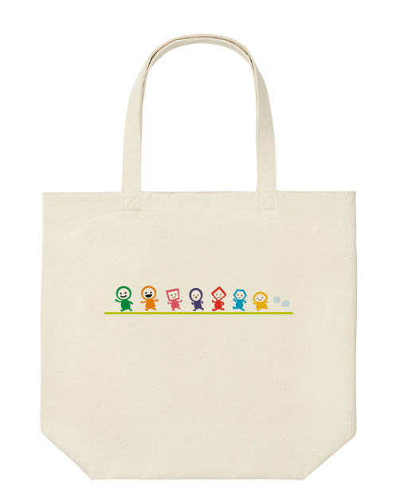
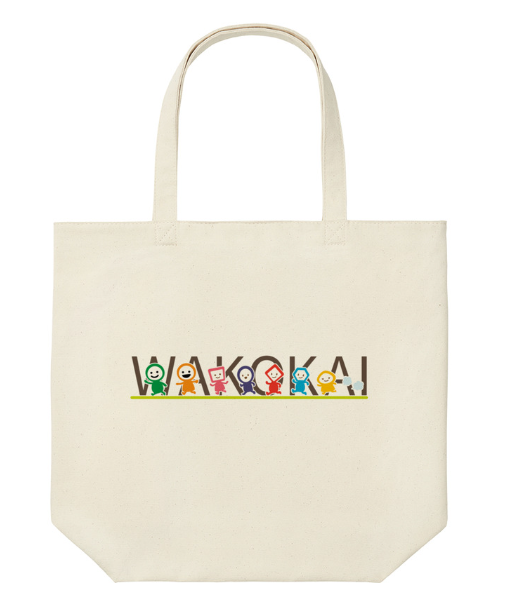

Works
実績
AIを活用して生み出したデザイン成果物。

トートバッグ — キャラクターデザイン
UNIQLO × WAKOKAI コラボ

トートバッグ — ロゴデザイン
UNIQLO × WAKOKAI コラボ

コラボ告知ビジュアル
UNIQLO UT MARKET 掲載
AI × Design
生成AIを活用したキャラクター・グッズデザインの実績。
UNIQLO × WAKOKAI コラボを実現。
About
生成AIを創造のパートナーとして活用し、
人の感性と組み合わせることで唯一の表現を生み出します。
AIを「道具」ではなく「共同制作者」として捉えています。プロンプト設計から仕上げまで、人間の感性とAIの可能性を掛け合わせた制作スタイルが強みです。
目的に応じて最適なAIツールを選定し、クオリティを最大化します。
Works
AIを活用して生み出したデザイン成果物。

UNIQLO × WAKOKAI コラボ

UNIQLO × WAKOKAI コラボ
UNIQLO UT MARKET 掲載
Process
構想から企業採用に至るまでの制作フロー。
世界観・ターゲット・スタイルを言語化し、最適なプロンプトを構築
複数のパターンを生成し、方向性を絞り込みながら精度を高める
AI出力を素材として、人間の感性でブラッシュアップ・完成へ
UNIQLO × WAKOKAIコラボとしてグッズ化・商品化を実現